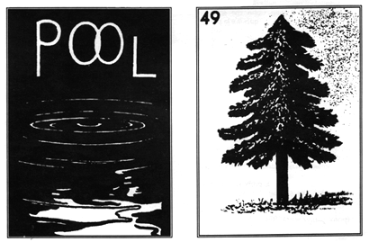
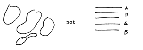
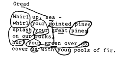
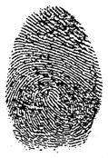

"Pool" is from the original letterhead for Winifred Bryher's film company, Pool Productions, which published Close Up. Pine is from a Mexican lotto card. (Illustrations selected by Meredith Stricker to accompany "new species.")
 new species
BY MEREDITH STRICKER
new species
BY MEREDITH STRICKER
I'm seeing something I can hardly see. A shifting of smoke-colored branches at dusk. The more I read H.D., the more I feel loosened from categories--in the woods watching deer take on the color of underbrush. As a reader I'm increasingly unsure of the species I'm encountering. Essay or lyric? Novel or film script? Is this an animate animal/bush or some kind of leafy tree/deer I'm tracking?
One of H.D.'s many names: dryad --hybrid of tree and woman--prefigures the kind of image she will write.Not vegetable, animal or mineral as common sense & cultural norms would dictate. Instead she chooses to define by undermining category toward exactitude.
As though H.D.'s images are gained through the application of a new kind of science: a rigorous in-seeing that radically alters our reading of what is given as natural by destabilizing and crossing normative boundaries.
"Science and art must beget a new creative medium," H.D. writes in The Gift.* Her work projects a scientific mythos where trees can be women--hamadryads, enspirited vegetation. And a mountain is also a maiden: an oread.
"Oread" is usually cited as an exemplar of Imagism. I'm interested, however, in re-examining the poem as a series of strategies for image-making that radically counters imagist practice.
The overlapping of sea and forest engenders images of a new species--the sea/fir or trees that move like waves where pines or lines are splashed, whirled open to a new world where the green--the newly seen--washes over us as we read.
These mirrored words compose ideogrammatic clusters apprehended as forms in themselves--as though we could read without even knowing English. A series of irregular, shaped beats as in dance so that correspondences are read across the grain of the lines to form patterns that are not linear but more like pools: 
Interlocking sight rhymes overlay the field: 
The
ir
sound travels throughout the poem as a kind of interior whirring.
By intensifying the overlap of sound, H.D. creates expectations that the reader rushes to fill. "Every rhyme invokes the reader's consideration of semantic as well as sound similarities." Once a pattern is set into motion, the reader continues to work in substitutions--echoes. The poem reverberates semantic associations that allow us to hear
ghost rhymes
--lines for pines, seen for green.
We cross borders between sound & semantics--to merge the categories of forest & sea. The process is erotic: it creates affinity and binding at the inner roots of language.
Instead of the clicking shut of Frost's well-oiled lock, H.D. presents us with multi-layered sounds--the aural equivalent to palimpsest. It would be a mistake to think of H.D.'s image as only visual. Imagine a structure for voice to enter. The image for H.D. is a honeycomb to attract rhythm & sound the way a reed or a whistle draws breath into music. Or like the rattling of a prayer wheel in the wind. The image is also a
madrigal:
song for five or six voices; lyric poem set to music--from
matigale, matricale--matrix--of the womb. Image, then, as visual matrix made of sound.
Repetition & rhyme in H.D.'s work teach us the limits of sense--of what makes sense through the old categories. We have to read with all our senses, not just sense alone. To read "Oread" for sense only leaves us with "whirl"--twice--a crystalline image, rock-hard, locked shut. When we read with all our senses, sound leads us--opens the lines--(or the pines)--so that whirl is also
whorl
(both carry the phonetic equivalent of wûrl).
A whorl in water as leaved pattern: plant/wave or sea/garden and also H.D.'s fingerprint or mark. "Oread" hybridizes a moving leaf/fingerprint/flower/shell. 
For me it seems clear that H.D.'s "whorl"
prefigures
Pound's "vortex--radiant node or cluster . . . from which and into which ideas are rushing. . . ."
"Oread" enacts a linguistic vortex at the primary units of the poem. The "rushing" in and out--the sea wash--occurs through a fundamental semantic ambiguity. Verbs exchange places with nouns. The written is compounded with the spoken. Homonyms & homophones act as mirrors, destabilizing the bedrock of grammar.
The title itself suggests a borderline species of noun which also shifts to the imperative--O read--instructing us how to enter the poem as a mirror for the reading process itself--one that is constructed by the reader's willingness to keep the image in motion. Reflecting: "to throw or bend back (heat, light or sound)." go to this issue's table of contents


 Oread
Oread

 Whirl up, sea
Whirl up, sea
 whirl your pointed pines,
whirl your pointed pines,
 splash your great pines
splash your great pines
 on our rocks,
on our rocks,
 hurl your green over us,
hurl your green over us,
 cover us with your pools of fir.
cover us with your pools of fir. (CP 55)
(CP 55)


 Whirl
Whirl
 whirl
whirl your
your pines
pines

 your
your pines
pines


 your
your us
us

 us
us your
your


 Oread
Oread
 Wh
ir
l up, sea--
Wh
ir
l up, sea--
 Whir
l
Whir
l your pointed pines,
your pointed pines,
 splash your great pines
splash your great pines
 on our rocks,
on our rocks,
 hurl your green over
us,
hurl your green over
us,
 cover us with your
pools of fir.
cover us with your
pools of fir.


 --Meredith Stricker
--Meredith Stricker


[ A longer version of this essay appeared in
Ink,
No.3. For more on Meredith Stricker, see
Editor's Notes.
]
* from "The Dark Room," a chapter excised from
The Gift,
re-published in
Montemora 8
(1981): 20.